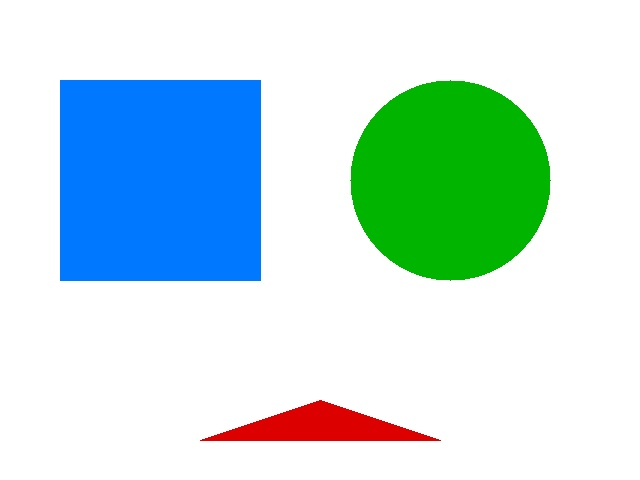
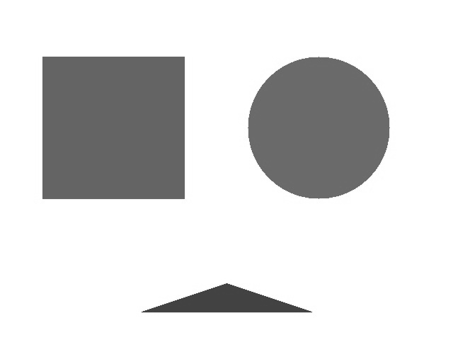
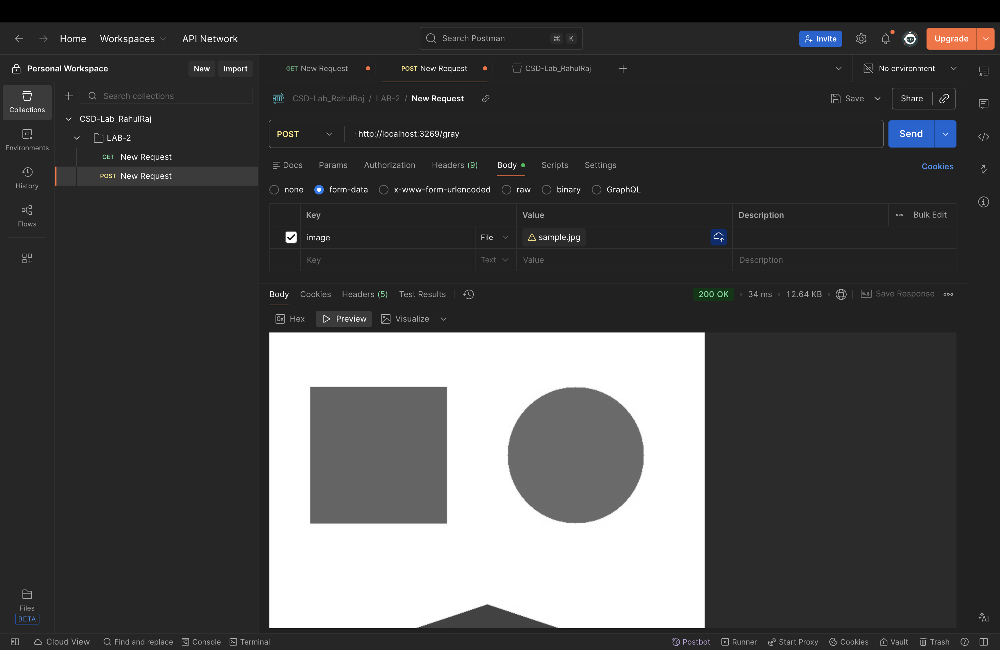
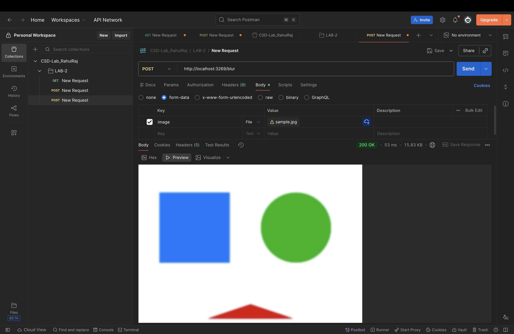
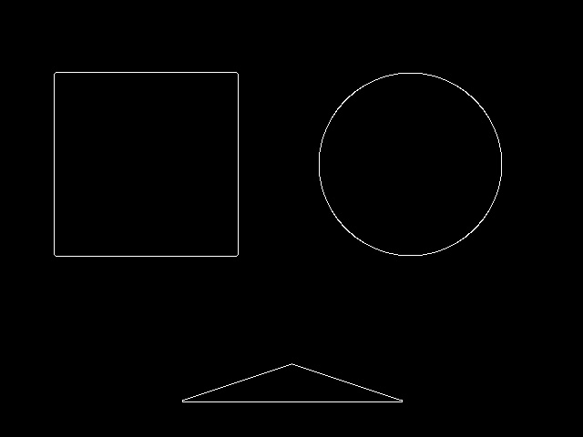
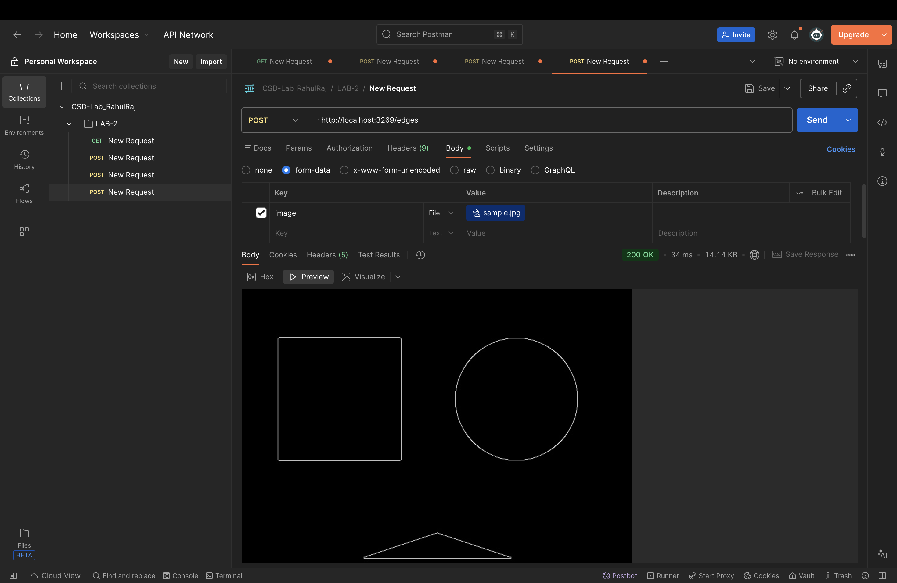
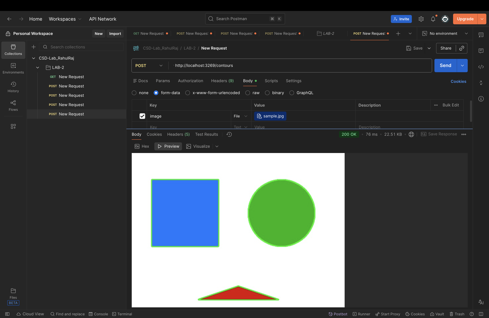

Building Computer Vision APIs using OpenCV and Flask
| Student Name | Rahul Raj |
| Roll Number | 12341680 |
| Assigned System / Hostname | [stuXX-sysXX] |
| SSH Port | [fill in after SSH allocation] |
| Application Port Used | [e.g. 3210 — see port-derivation table in README] |
| Date | 5th August, 2026 |
Implement a Flask REST API that exposes four OpenCV image-processing operations —
grayscale conversion, Gaussian blur, Canny edge detection, and contour detection —
as HTTP POST endpoints. Each endpoint accepts an uploaded image and
returns the processed image as a JPEG response. The API was first built and
verified locally with curl, then deployed on the allocated lab
machine and tested with Postman.
import os
from flask import Flask, request, Response, jsonify
import cv2
import numpy as np
app = Flask(__name__)
def decode_image(file_storage):
data = np.frombuffer(file_storage.read(), np.uint8)
return cv2.imdecode(data, cv2.IMREAD_COLOR)
def encode_image(img):
_, buf = cv2.imencode(".jpg", img)
return buf.tobytes()
def require_image():
if "image" not in request.files:
return None, (jsonify({"error": "No 'image' file part in request"}), 400)
img = decode_image(request.files["image"])
if img is None:
return None, (jsonify({"error": "Uploaded file is not a valid image"}), 400)
return img, None
@app.route("/")
def home():
return jsonify({
"message": "OpenCV Image Processing API",
"routes": {
"/gray": "POST form-data 'image' -> grayscale JPEG",
"/blur": "POST form-data 'image' -> Gaussian-blurred JPEG",
"/edges": "POST form-data 'image' -> Canny edge-detected JPEG",
"/contours": "POST form-data 'image' -> JPEG with contours drawn",
},
})
@app.route("/gray", methods=["POST"])
def gray():
img, err = require_image()
if err:
return err
gray_img = cv2.cvtColor(img, cv2.COLOR_BGR2GRAY)
return Response(encode_image(gray_img), mimetype="image/jpeg")
@app.route("/blur", methods=["POST"])
def blur():
img, err = require_image()
if err:
return err
blurred = cv2.GaussianBlur(img, (15, 15), 0)
return Response(encode_image(blurred), mimetype="image/jpeg")
@app.route("/edges", methods=["POST"])
def edges():
img, err = require_image()
if err:
return err
gray_img = cv2.cvtColor(img, cv2.COLOR_BGR2GRAY)
edge_img = cv2.Canny(gray_img, 50, 150)
return Response(encode_image(edge_img), mimetype="image/jpeg")
@app.route("/contours", methods=["POST"])
def contours():
img, err = require_image()
if err:
return err
gray_img = cv2.cvtColor(img, cv2.COLOR_BGR2GRAY)
edge_img = cv2.Canny(gray_img, 50, 150)
cnts, _ = cv2.findContours(edge_img, cv2.RETR_EXTERNAL, cv2.CHAIN_APPROX_SIMPLE)
output = img.copy()
cv2.drawContours(output, cnts, -1, (0, 255, 0), 2)
return Response(encode_image(output), mimetype="image/jpeg")
if __name__ == "__main__":
port = int(os.environ.get("PORT", 5000))
app.run(host="0.0.0.0", port=port, debug=True)
| Method | Route | Purpose | Response |
|---|---|---|---|
| GET | / | API info / health check | JSON |
| POST | /gray | Grayscale conversion | JPEG |
| POST | /blur | Gaussian blur (15×15 kernel) | JPEG |
| POST | /edges | Canny edge detection (50, 150) | JPEG |
| POST | /contours | Contour detection + drawing | JPEG |
All processing routes take a multipart form-data field named image.
POST /gray
curl -X POST -F "image=@sample.jpg" http://<host>:<port>/gray -o gray_output.jpg


POST /blur
curl -X POST -F "image=@sample.jpg" http://<host>:<port>/blur -o blur_output.jpg
POST /edges
curl -X POST -F "image=@sample.jpg" http://<host>:<port>/edges -o edges_output.jpg

POST /contours
curl -X POST -F "image=@sample.jpg" http://<host>:<port>/contours -o contours_output.jpg
HTTP 200 with header
Content-Type: image/jpeg when a valid image file was attached
under the form-data key image./gray with no file attached correctly
returned HTTP 400 with a JSON error body
({"error": "No 'image' file part in request"}), confirming the
input-validation path works as expected./edges and /gray return single-channel
(grayscale) JPEGs, while /blur and /contours return
3-channel color JPEGs — visible in the output file sizes and in
cv2.imencode's handling of the array shape.findContours/drawContours
correctly traced the boundary of each shape.